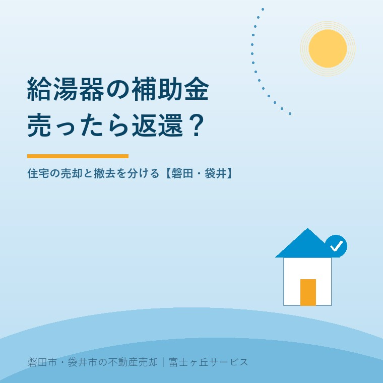
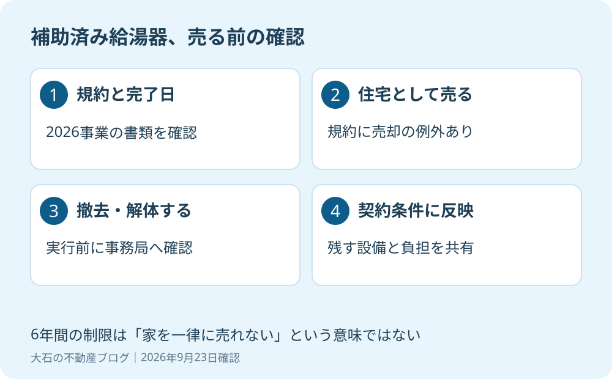

給湯省エネ2026の補助金返還｜家を売る場合は？
2026年9月23日｜カテゴリ：売却費用・補助制度

この記事の要点
Q. 補助金で給湯器を替えた家を売ると、補助金を返すのですか？
給湯省エネ2026では、補助を受けた住宅を住宅として売る場合は、6年間の処分制限による返還対象の例外です。給湯器の撤去や解体は同じ扱いとは限らず、契約前に施工業者・事務局へ確認します。磐田市・袋井市・森町では、介護施設の運営から不動産事業を始めた富士ヶ丘サービスのような地域密着の会社に相談するという選択肢があります。
大石浩之（磐田市／不動産業）です。宅地建物取引士として、売主が契約前に確認しておく費用と設備の話を書きます。補助金で給湯器を交換した後に、施設入居や住み替えで家を売ることになった。そのとき、受け取った補助金を全額返すのかと気になるのは自然です。
答えを急ぐ前に、「家を住宅として引き渡す」のか、「給湯器を外す、家を解体する」のかを分けてください。この記事は2026年9月23日に確認した給湯省エネ2026事業の規約を対象にしています。他の年度や別の補助制度を一緒に扱わないことが出発点です。

6年間の制限には、住宅として売る場合の例外がある
給湯省エネ2026事業の「共同事業実施規約」様式3、第1条第2項⑦は、補助事業の完了から6年間の処分制限を定めています。一方、補助を受けた住宅を住宅として販売・譲渡・貸付する場合は、同号の返還対象から除くとしています。
規約は、事務局の承認なく、補助の目的に反する使用や譲渡、交換、貸付、担保への提供、取壊し、不当な廃棄等をした場合を返還命令の対象にしています。ここでいう処分は、ごみとして捨てることだけではありません。設備の使い方や権利の移転も含めて確認する言葉です。
意外に思われるかもしれませんが、6年間という数字は「6年間、家を売ってはいけない」という意味ではありません。規約には住宅として売る場合の例外が明記されています。売却という言葉だけを見て返還が決まる、と読むのは違います。
私は、この例外があることを良い点だと考えます。給湯器を使い続ける住宅の引渡しまで一律に止めないので、住み替えや介護に伴う暮らしの変化と両立を考えられます。所有者が替わることと、設備を使わなくすることを分けられる仕組みです。
そのうえで、案内には例外まで一緒に示してほしいと思います。「6年間の制限」だけでは、持ち主が不要な心配を抱えます。反対に「売却なら返還なし」だけでは、解体して更地にする計画まで含めて安心させてしまいます。条件を省いた短い説明は、どちら側にも不親切です。
住宅の引渡しと、給湯器の撤去を分ける
補助を受けた住宅を住宅として引き渡す場合と、補助対象の給湯器を撤去・廃棄する場合は、規約上の確認を分けます。売買の予定があるという理由だけで、設備を自由に外せると決めないでください。
| 売却時の予定 | 契約前に確かめること |
|---|---|
| 給湯器を残し、住宅として売る | 住宅としての売却の例外と、実際の引渡し条件が合うか |
| 売却前に給湯器を取り外す | 撤去の理由・予定日を伝え、事務局への確認や承認が必要か |
| 解体して更地で引き渡す | 住宅としての売却と同じ扱いにせず、取壊し・廃棄の取扱いを確認 |
| 給湯器がリース契約 | 補助の条件に加え、所有者とリース契約の引継ぎ・終了条件を確認 |
給湯器を残すなら、仲介会社に対象設備を伝えます。型番、設置場所、交換時期、故障や不具合の有無を、分かる範囲で整理します。私は、補助金の書類と設備の説明を別々の担当に渡して終わらせず、同じ引渡し条件として照らし合わせることを勧めます。
たとえば「家は現状で売る」と考えていても、買主との話で更地渡しに変わることがあります。これは想定例です。売り方が変わったら、補助金について確認した前提も変わります。最初の相談で返還の心配がないと思えても、撤去の依頼を出す前にもう一度確認する必要があります。
設備の状態と売買契約の責任の整理は、契約不適合責任と売主の確認事項も参考にしてください。補助制度の例外は、設備の不具合を説明しなくてよいという意味ではありません。設備を残す範囲と、故障時の扱いは売買条件として相談します。
施工業者と事務局に見せる書類をそろえる
給湯省エネ2026事業の返還条件を確認するには、利用した制度名、補助対象の製品、補助事業の完了時期、これから行う行為を特定します。規約の6年間は、家を売り出した日や補助金を受け取った日から数えるという記載ではありません。
共同事業実施規約の控え、工事請負契約や請求関係の書類、補助の交付に関する通知を探します。手元にない書類は、申請を担当した事業者に照会します。規約第3条では、申請等の手続を事業者へ委託する関係が示されています。家族が制度名を覚えていないときも、施工業者の名前は確認の手がかりになります。
私は、問い合わせの文を次のように具体化します。「2026事業で設置した給湯器です。住宅として売り、機器は残す予定です。規約の例外に該当するか、必要な連絡や書類があるか確認したい」。撤去予定なら、その一文を撤去理由と予定日に置き換えます。
返答は、確認日、回答した窓口、伝えた条件と一緒に残します。これは私の提案する実務上の記録です。誰かが「大丈夫と言った」という伝聞では、買主から質問されたときに説明ができません。返還額や承認の可否が未確定なら、未確定のまま仲介会社に共有します。
給湯器以外の補助も利用しているなら、空き家の改修補助と売却前の確認も参照してください。同じ住宅でも、補助ごとに条件が違います。給湯省エネ2026の例外を、他制度の答えとして使わないことです。
私は、返還の心配を売買条件の確認に置き換える
売主の負担を整理するには、補助金の額だけを見るより、給湯器を残すのか、誰がいつ確認するのかを先に決めます。返還の可能性が分からないままでは、手取りの見込みにも、引渡し条件にも空欄が残ります。
私は、制度の説明より先に家族の段取りを置きます。施工業者へ聞く人、書類を集める人、仲介会社へ伝える人を決める。それだけで、売買契約の直前になって全員が同じ書類を探す事態を減らせます。補助金を受けたことを隠す理由はありません。
私が迷うのは、まだ売り方が決まっていない段階で、どこまで費用を確定できるかです。住宅のまま売れるのか、解体の希望が出るのかは、相談の入口では分かりません。だから、返還不要とも全額返還とも先に言い切らず、予定別に確認事項を残します。これは相談体験の紹介ではなく、私の判断の仕方です。
売却価格だけで話を終えず、売却後の手取りで考える方法につなげます。仮に返還などの支出が生じるなら、その確定した額を費用表に加えます。未確認の支出をゼロとして見積もらない。この線は、売主に責任を負う側として守ります。
磐田・袋井の実家では、撤去を約束する前に動く
磐田市・袋井市で実家を売る準備でも、給湯省エネ2026の規約は、住宅として残す計画と撤去する計画を分けて読みます。磐田市見付の家を例にするなら、施設入居で空いた家をそのまま売るのか、家財整理と同時に設備まで処分するのかを、別の欄に書くと整理できます。
私は、家財の片付けを頼むときに給湯器まで撤去対象へ入っていないか、見積書を確認するよう勧めます。屋外にあるから不要品、という判断はしません。補助の条件を調べる前に工事が進めば、後から元の計画へ戻すのは難しくなります。
- 補助を利用した年度と制度名を、書類で確認する。
- 給湯器を残すか、撤去するかを売却計画に書き込む。
- 施工業者・事務局の確認結果を、契約前に仲介会社と共有する。
今日、売却を決断する必要はありません。規約の控えと施工業者の連絡先を見つけるだけでも前へ進みます。富士ヶ丘サービスは、磐田・袋井を中心に介護と不動産を一体で相談し、家族が困らない売却を支えます。私は、撤去を約束する前の資料整理から案内します。補助の個別扱いは事務局へ、税務・登記・相続の個別判断は専門家に確認を。
よくある質問
この記事のテーマについて、判断と準備の範囲を分けて答えます。
- 給湯省エネ2026の補助を受けたら、6年間は家を売れませんか？
- 6年間、一律に売却できないという規約ではありません。共同事業実施規約第1条第2項⑦は、補助を受けた住宅を住宅として販売・譲渡・貸付する場合を、同号の返還対象から除外しています。ただし、給湯器の撤去や建物の解体は分けて確認します。別年度の補助金や他制度には、その制度の条件を確認してください。
- 家を更地にして渡すなら、返還は必要ですか？
- 更地渡しでは、住宅としての売却の例外をそのまま当てはめられません。補助事業の完了から6年間に、承認なく目的に反する取壊しや不当な廃棄等をすると返還命令の対象になり得ます。ただし、個別の承認可否や返還額は本記事では判断できません。解体の契約や設備の撤去前に、申請した事業者と事務局へ計画を伝えてください。
- 売買契約前に、仲介会社へ何を伝えればよいですか？
- 給湯省エネ2026の補助を利用したこと、対象の給湯器、補助事業の完了時期、給湯器を残すか撤去するかを伝えます。共同事業実施規約の控え、工事・補助関係の書類、機器の型番や保証書も共有すると確認が進みます。住宅としての引渡しか解体予定かを明確にし、未確認事項を返還不要と断言したまま契約しないでください。

この記事を書いた人：大石浩之（磐田市／不動産業・宅地建物取引士）
富士ヶ丘サービス株式会社。介護施設の運営から不動産事業を始め、磐田市・袋井市・森町で、介護と相続、実家の売却を一体で相談できる窓口を設けています。家族が困らない売却のため、資料と現地の条件を一件ずつ整理します。著者プロフィール
本記事は2026年9月23日時点の公開情報と筆者の意見です。制度・数値・手続は変更されることがあります。個別の取扱いは担当窓口へ、税務・登記・相続の個別判断は税理士・司法書士・弁護士などの専門家に確認を。